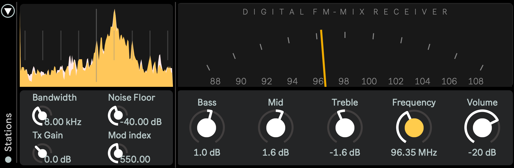
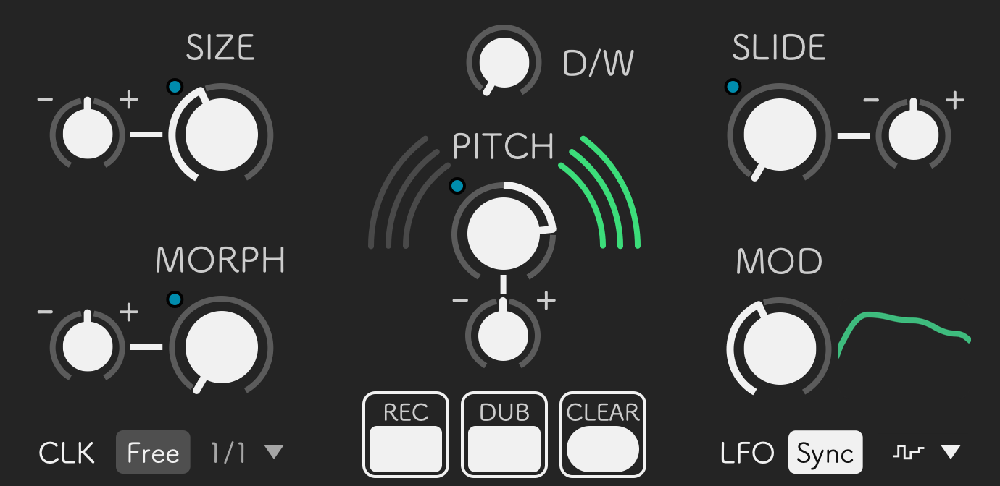
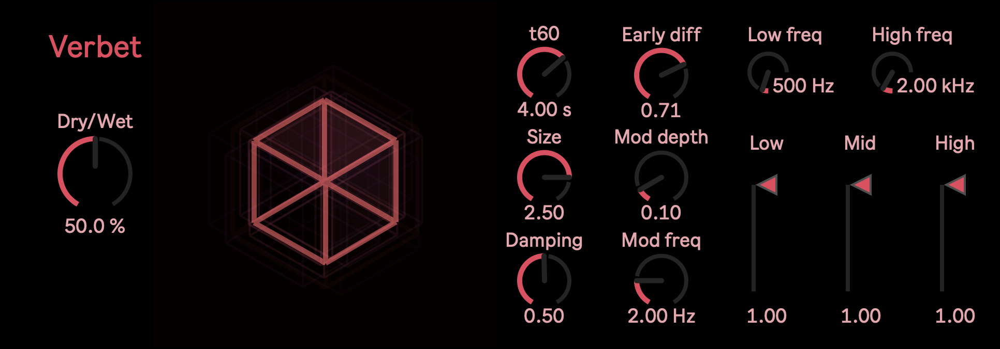

FM Radio
Tune and mix up to eight stereo signals as stations on the same FM band

Tune and mix up to eight stereo signals as stations on the same FM band

Digital tape reel with granular capabilities

A spacious reverb algorithm